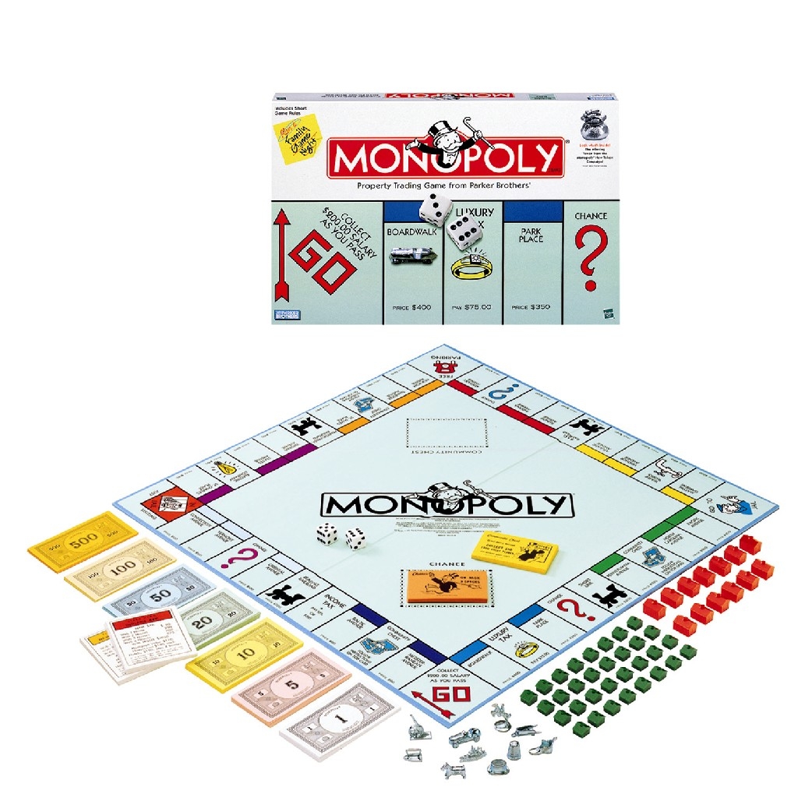
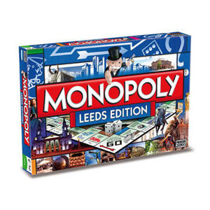

El juego de mesa más vendido de la historia
Un juego creado con la función de servir como herramienta para enseñar teorías acerca de la justicia social y económica extraídasdel estudio titulado Progreso y Miseria de Henry George
A lo largo de 80 años, el juego ha sufrido una notable evolución.Sus múltiples ediciones y sus tantas versiones han dado pie a que se cambiara desde la caja que lo contiene hasta los elementos que lo componen. Logrando así, mantenerse como el favorito a través de las décadas.
Con los años la finalidad de juego cambió para solo disfrutar un buen rato,negociando propiedades y hasta haciendo uso de medios electrónicos para todas las transacciones que requiere el juego.
Con información de Graffica.info,cultura visual